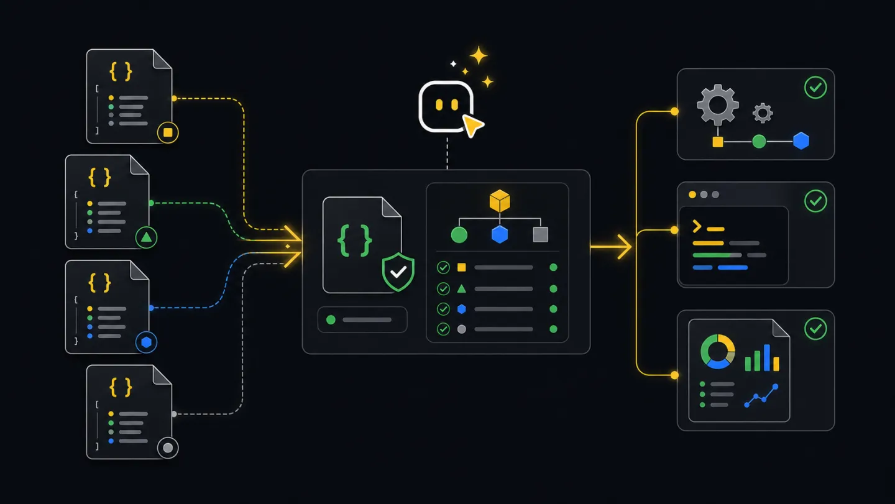

Contracts
Schema contracts.
Schemas describe the JSON shape produced by CLI commands so agents, CI jobs, and integrations can depend on fields instead of scraping terminal text.
What schemas do
A schema tells another program which fields it can trust. Use schemas when a watch job reads incident frames, a report job stores source data, or an agent decides the next step from a flow summary.
Workflow
- CommandRun JSON modeUse structured CLI output or save a JSON file.
- SchemaPick contractMatch the command output to the schema family.
- ParseRead fieldsUse fields like event, outcome, nextAction, totals, and paths.
- BranchDecide actionNotify, fail CI, create a report, or wait for approval.
- StoreKeep artifactsAttach JSON alongside human-readable output.
Ask an agent
Ask for JSON whenever the result will drive a decision, a CI status, or another tool.
Run the xyte-cli command with strict JSON or a saved output file.
Tell me which schema applies.
Read fields from the JSON, not from terminal text.
Return the artifact path and the decision you made from it.Agent and CI
Agents use JSON when they need to reason over output. CI jobs save JSON as an artifact and fail only on clear machine-readable conditions.
xyte-cli flow run flow.daily-deep-dive-report \
--tenant <tenant-id> \
--plan \
--strict-json \
--out-dir ./tmp/flow-runs
xyte-cli ops inspect fleet \
--tenant <tenant-id> \
--output json \
--strict-json \
--out ./artifacts/fleet.json
xyte-cli ops watch incidents \
--tenant <tenant-id> \
--profile incidents-active \
--once \
--output json \
--strict-json \
--out ./artifacts/incidents.ndjsonCommon outputs
Choose the schema by the command that produced the file.
xyte.doctor.environment.v1: choose installed, npx, workspace-local, or blocked setup mode.xyte.status.v1: read fast tenant readiness from jobs and agents.xyte.watch.frame.v1: react to incident snapshots, deltas, heartbeats, and errors.xyte.inspect.fleet.v1andxyte.inspect.deep-dive.v1: store operational source data for reports.xyte.report.v1: track generated report paths and report metadata.xyte.flow.run.v1: read flow outcome, next action, run bundle path, and pause state.xyte.utility.prepare.v1andxyte.utility.batch.v1: process prepared rows, rejected rows, and batch dispositions.
Command-to-schema mapping
| Command | Use this schema | Automation use |
|---|---|---|
xyte-cli doctor environment --format json | xyte.doctor.environment.v1 | Choose installed, npx, workspace-local, or blocked setup path. |
xyte-cli status --mode fast --format json | xyte.status.v1 | Decide whether a job can continue to operational commands. |
xyte-cli ops watch incidents --output json --strict-json | xyte.watch.frame.v1 | Read snapshot, delta, heartbeat, and error frames. |
xyte-cli ops inspect fleet --output json | xyte.inspect.fleet.v1 | Store fleet counts and device context for dashboards or handoffs. |
xyte-cli ops inspect deep-dive --output json | xyte.inspect.deep-dive.v1 | Save report source data before rendering Markdown or PDF. |
xyte-cli ops report generate --input <source.json> --out <report.md> --render markdown | xyte.report.v1 | Track report path, input source, and render metadata. |
xyte-cli flow run <flow-id> --plan --strict-json | xyte.flow.run.v1 | Read outcome, pause state, next action, and run bundle path. |
xyte-cli util prepare --action <action-key> --input <file.xlsx> | xyte.utility.prepare.v1 | Count primary rows, rejected rows, generated files, and next command. |
xyte-cli edge claim-batch --input <prepared.csv> --plan | xyte.utility.batch.v1 | Track batch row dispositions, partial runs, and resume behavior. |
Compatibility notes
- The
.v1suffix means consumers can expect additive changes, not arbitrary field renames, inside that version. - Automation can ignore unknown fields and require only the fields it needs for the decision.
- Use
--strict-jsonwhen a process reads stdout. Use--outwhen a process parses a saved artifact. - Watch and batch reports can be NDJSON. Validate one line at a time instead of treating the whole file as a JSON array.
Small payload examples
{
"schemaVersion": "xyte.status.v1",
"generatedAtUtc": "2026-06-30T00:00:00.000Z",
"mode": "fast",
"checkConnectivity": true,
"readiness": {
"state": "ready",
"tenantId": "<tenant-id>",
"missingItems": [],
"recommendedActions": [],
"providers": [
{ "provider": "xyte-org", "slotCount": 1, "hasActiveSecret": true }
],
"connectionState": "connected",
"connectivity": {
"state": "connected",
"message": "Connected",
"retriable": false
}
}
}{
"schemaVersion": "xyte.watch.frame.v1",
"timestamp": "2026-06-30T00:00:00.000Z",
"runId": "run-001",
"sequence": 0,
"pollIndex": 1,
"intervalMs": 2000,
"profile": "incidents-active",
"endpointKey": "organization.incidents.getIncidents",
"tenantId": "<tenant-id>",
"eventType": "snapshot",
"query": { "status": "active" },
"summary": {
"total": 12,
"added": 0,
"removed": 0,
"updated": 0,
"changed": false
},
"items": []
}{
"schemaVersion": "xyte.flow.run.v1",
"generatedAtUtc": "2026-06-30T00:00:00.000Z",
"runId": "run-001",
"flowId": "flow.guided-remediation",
"resolvedFlowId": "flow.guided-remediation",
"mode": "plan",
"tenantId": "<tenant-id>",
"bundleDir": "./tmp/flow-runs/flow.guided-remediation/run-001",
"manifestPath": "./tmp/flow-runs/flow.guided-remediation/run-001/manifest.json",
"inputsPath": "./tmp/flow-runs/flow.guided-remediation/run-001/inputs.json",
"decisionsPath": "./tmp/flow-runs/flow.guided-remediation/run-001/decisions.ndjson",
"errorsPath": "./tmp/flow-runs/flow.guided-remediation/run-001/errors.ndjson",
"watchFramesPath": "./tmp/flow-runs/flow.guided-remediation/run-001/watch-frames.ndjson",
"startedAtUtc": "2026-06-30T00:00:00.000Z",
"endedAtUtc": "2026-06-30T00:00:02.000Z",
"durationMs": 2000,
"outcome": "pending_gate",
"nextResumeStepId": "gate_send_command",
"resumeCommand": "xyte-cli flow run flow.guided-remediation --tenant <tenant-id> --apply --resume ./tmp/flow-runs/flow.guided-remediation/run-001",
"nextAction": {
"kind": "approve_gate",
"stepId": "gate_send_command",
"title": "Review command and resume with --apply",
"requiresWrite": true,
"artifactPaths": ["./tmp/flow-runs/flow.guided-remediation/run-001/manifest.json"],
"command": "xyte-cli flow run flow.guided-remediation --tenant <tenant-id> --apply --resume ./tmp/flow-runs/flow.guided-remediation/run-001"
},
"steps": [],
"decisions": { "pending": 1, "approved": 0, "blocked": 0 },
"classifications": { "needs_data": 0, "bug": 0 },
"cursor": { "nextStepIndex": 0, "nextStepId": "gate_send_command" }
}Examples
Run xyte-cli doctor environment --format json, read the recommended mode, and fail when the mode is blocked.
Run incident watch with --strict-json, read snapshot or delta frames, and notify only when active incidents changed.
Generate a Markdown or PDF report from saved deep-dive JSON, then attach both files so readers can trace the numbers.
Read nextAction from a flow summary and use the bundle path in the approved resume command.
Validate JSON with ajv
Use schema validation when another system will depend on a CLI artifact. For NDJSON, validate each line separately.
npm exec --yes ajv-cli validate \
-s ./docs/schemas/status.v1.schema.json \
-d ./artifacts/status.json
while IFS= read -r line; do
printf "%s\n" "$line" | npm exec --yes ajv-cli validate \
-s ./docs/schemas/watch-frame.v1.schema.json \
-d /dev/stdin
done < ./artifacts/incidents.ndjsonSchema links
These files are the public machine-readable contracts shipped with the docs.
- call-envelope.v1.schema.json
- doctor-environment.v1.schema.json
- flow-run.v1.schema.json
- headless-frame.v1.schema.json
- inspect-deep-dive.v1.schema.json
- inspect-fleet.v1.schema.json
- report.v1.schema.json
- status.v1.schema.json
- upgrade-check.v1.schema.json
- upgrade-result.v1.schema.json
- utility-batch.v1.schema.json
- utility-prepare.v1.schema.json
- watch-frame.v1.schema.json